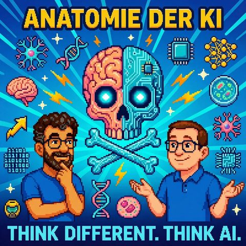

Anatomie der KI
Auf Deutsch lesenTopics Robotik
What it is about
Biology and AI converge: From human neurons to the digital fruit fly. The future will be wilder than we think.
In this episode, we venture into the interface of biology and artificial intelligence: What happens when human brain cells in a petri dish play ego-shooters like Doom? And how real is the first upload of a fruit fly into the digital realm? We discuss not only fascinating experiments but also philosophical questions about consciousness, evolution, and the future of AI.
We take you on a journey where the boundaries between human, machine, and nature blur. Together, we consider how biological analogies can help us better understand modern AI systems – from neurons to stem cells to the digital immune system. Tune in if you want to know why evolution continues to find its way in the digital age – and what that means for our future.
The Biology of AI
Book
Cortical Labs
https://www.corticallabs.com/
Doom (Video Game)
https://de.wikipedia.org/wiki/Doom_(Computerspiel)
Boston Dynamics
https://www.bostondynamics.com/
Fruit Fly (Drosophila)
https://de.wikipedia.org/wiki/Fruchtfliegen
Andrej Karpathy
https://karpathy.ai/
OpenAI Gym
https://www.gymlibrary.dev/
GitHub
https://github.com/
AgentHub
https://github.com/agenthub-ai/agenthub
Organoids
https://de.wikipedia.org/wiki/Organoid
Jurassic Park (Quote: Life finds a way)
https://de.wikipedia.org/wiki/Jurassic_Park_(Film)
Transcript
00:00:00Welcome to Think Different, Think AI, the podcast by Mark and Jens.
00:00:07Two tech-loving minds who not only talk about artificial intelligence but live it.
00:00:14Here you will find clear classifications, real practical insights, and a fresh perspective on what is possible.
00:00:20Understandable, critical, and always with a wink.
00:00:24Food for thought, for a smile, and above all, for discussion.
00:00:43Good evening, new luck. At least regarding our recording.
00:00:46A warm welcome to Think Different, Think AI.
00:00:49I'm not alone today; Jens is with me again
00:00:52and we have an episode today.
00:00:54How should I put it?
00:00:56Biology meets AI.
00:00:58I would claim that we have a few points,
00:01:01that, well, I would say,
00:01:04a few years ago would have been good material, among other things, for science fiction or even horror movies.
00:01:11Meanwhile, technology has somehow progressed, and we thought, friends of the night, let’s share a bit about what's happening in the field of artificial intelligence that has direct or indirect analogies or even real connections to biology.
00:01:32Speaking of biology, I welcome Jens, who, in his biological form, is sitting digitally across from me.
00:01:40Hello Jens, great to have you here, let’s jump right in.
00:01:45I think with a game, at least from my youth, when shooting games were not yet known in my parents' house
00:01:53and I played such things via a serial cable between two computers.
00:01:58Hello Mark, thanks for the introduction.
00:02:02I panicked for a moment that you wanted to refer to my advanced biology course and that I would have to say honest things.
00:02:08I wasn't really into that much anymore.
00:02:11But I know about gaming, and the game you're probably referring to is Doom.
00:02:16Doom is one of the very old first-person shooters,
00:02:22where we first had really cool 3D worlds, in quotation marks, pixel-art graphics.
00:02:29Sometimes it's cool.
00:02:31Two-dimensional enemies too, I believe the enemies were two-dimensional.
00:02:34They were more like sprites that moved a bit in front of the background.
00:02:40But that was really cool.
00:02:42Doom is an absolute classic in the gaming world.
00:02:46And accordingly, when the colleagues from Cortical Labs,
00:02:51I'll tell you in a bit who they are, called out, I mean, they called out to the internet,
00:02:56to ask what else we could do on the Cortical Labs computer? The
00:03:02Internet of course answered, let’s play Doom. So what does Cortical Labs actually do?
00:03:08Cortical Labs is a company that takes human brain cells, sort of in a petri dish,
00:03:15grows them, and they are, so no animal cells, human brain cells, they are cultivated
00:03:23in the Briemer petri dish, they always do it that way because of the whole witchcraft, that
00:03:26all these alchemists and biologists and so on, actually doing up there, well uh.
00:03:31Today they want to create gold, today they're making brain cells, but whatever.
00:03:35Yeah, come on, there are a few good things as well, but yes, we are also a bit
00:03:38Magic and Spooky partly, and that's in Katowice Spooky, so the breeders
00:03:42basically. A neural network made of 200,000 neurons that consist of human brain cells.
00:03:53This can be used just like an artificial neural network, where we the
00:04:01the whole time here in our episode with persuading, but in the so-called AI, which can do certain
00:04:04things. So this Petri dish, it basically lives on a microchip
00:04:08and interacts with electrons around it, it also has a rack, it's like a server rack,
00:04:13you can also address this company and perform calculations, so it performs human
00:04:20calculations again, like the old computers, back then it was also first humans,
00:04:24before it was the other way around and in this case it shoots.
00:04:27I also learned beforehand that back then the people at NASA were doing the math
00:04:31problems, which were also called computers.
00:04:35Yes, that was what I was referencing.
00:04:38The circle is closing right now.
00:04:41Now the person who looks, Mutua,
00:04:44is no longer a real person first,
00:04:47but in quotes, calmly his brain cells.
00:04:51These brain cells have really succeeded in being manipulated in this growth.
00:04:54As I said, we will definitely share this.
00:04:56Let's take a look at it, check it out.
00:04:58It's so crazy, out there, spooky,
00:05:02Bukki, you also always, but again, there is one thing that is currently happening, like a thousand million
00:05:10other things that are somehow happening, which show that our future, the one we want
00:05:14will be, but it also raises a lot of questions.
00:05:17Just happening right now.
00:05:18Hello?
00:05:19Yes.
00:05:20Those are human brains.
00:05:21Yes, that's been tapped.
00:05:22They're playing Doom.
00:05:23Yes.
00:05:24So I don't know what your skill is.
00:05:26I don't know what your skill is either.
00:05:28I also find it shocking that I would say a few neurons are enough,
00:05:34to play poorly.
00:05:35I always thought you had to be a bit smarter than that.
00:05:38Which immediately brings me to the question, how should we classify this now?
00:05:45I mean, you're always faced with the question when you interact with animals.
00:05:49what you do when you deal with flankers, what is perceived through the sensors,
00:05:54pain, fear.
00:05:55But when do we have a consciousness?
00:05:58When do we have AGI and all that stuff, if I now consider that brain cells
00:06:03are playing dumb?
00:06:04So how long does a brain cell live, does it learn something?
00:06:12I don't really know anymore, I think they are always somewhat, I don't know
00:06:16if they are somehow 90 days, something else, we need to look that up, it's gained
00:06:19yes.
00:06:20So a cell solution and stuff like that, where are they still so dumb?
00:06:22Exactly, that's the problem, I believe, it's probably self-referential at some point
00:06:28then poisoned, whatever, that's not somehow eternal, can't live forever in that moment,
00:06:34but they've now gotten the Kotty-Glabs phrase into such a critical mass of
00:06:40time that it works quite well overall, a computer like that costs, then I believe
00:06:44around 30,000 dollars, theoretically, you can buy it, you can get that thing for
00:06:4830,000 dollars at home, but it doesn't last that long, I don't know if then
00:06:51somehow, like on Amazon you can order a petri dish, but on Amazon, if your
00:07:00brain cells petri dish has died, just to put it into perspective, 200,000 brain cells
00:07:06or neurons, the human brain has around 86 trillion, so there's still a
00:07:10gap that is significant, around a factor of 430,000 or something like that, because
00:07:18for a white it's then the difference of 1,000-fold.
00:07:21That's still a difference, but just like you said, these 200,000
00:07:25are already enough to make you play around. If you think of it, there's this
00:07:31statistic that says something like, I don't know the number right now, how much percent
00:07:35of our brain do we actually use? I’m curious, yeah? What will the numbers be
00:07:42at the end of the day when you, let’s say, want to simulate a bit more
00:07:44from simulation we might get to later, but I'm curious
00:07:47if they'll eventually integrate something like a chat interface in there,
00:07:51whether then someone says, hello, get me out of here, yeah. I'm like a Kickstarter. No,
00:07:55sorry. Yeah, I don't know. That’s something to mention. Of course, there’s still the
00:08:02thing, when we talk about artificial intelligence, that we have this balancing act between
00:08:09how good is it maybe already to be called a living being,
00:08:14when it is there, then it's still simple. You could say that's an artificial
00:08:18and moral network and all possible behaviors are then somehow copied.
00:08:23Now it's just a network of nerve cells. Of course, the behaviors are
00:08:29all programmed, and then they just, yes, electrical impulses run through them
00:08:33just like those that pass through some weights in a neural network.
00:08:38But now to think about this artificial,
00:08:43this artificial human neural network that has been developed, whether it also develops feelings,
00:08:49whether it can evolve further just like in natural evolution,
00:08:57and such things, if perhaps someday it reaches the size of these
00:09:01petri dishes.
00:09:02I'm not a biologist, I'm not a chemist, I have no idea how they would
00:09:06manage to keep these things alive longer or perhaps plant even more
00:09:11in from the start. So, when is this moment reached where it becomes actually,
00:09:17well, honestly, if I worked in that company, I would already have
00:09:22some problems throwing that petri dish in the trash.
00:09:27You know? I mean, it used to play dumb and then it goes back in the trash.
00:09:31It really hurt when I had to throw my son's goldfish, which had died,
00:09:36down the drain. So I don't know how I would manage that now.
00:09:43And that's quite something.
00:09:46Yes, especially since I always think of something like when you see an ad
00:09:52from Boston, what does advertising mean? Videos from Boston Dynamics and so on, where you
00:09:57think, yes, that's what they're showing now. That's what maybe
00:10:02they're still working on. New GPT model, robot arms, other sensors, or classics, iPhone, yes. So
00:10:11I mean, there always comes a new iPhone out, la, la, la. Or Samsung phones,
00:10:15but actually they already know what's coming, we could do that next
00:10:19year and the year after, and maybe a little bit, okay, in three years we want
00:10:23I don’t know, rotographic displays and we already have a prototype down at Canon
00:10:26that's as big as a wardrobe. So, as big as a wardrobe, of course it fits a bit
00:10:30more height and mass, that's clear, but along the lines of, where is the limit? And I found that
00:10:36stupid, I thought that was already mega, I mean, also crazy, yeah, in the idea, because
00:10:42whether it's now human or height, human or height, exactly. Human or height is
00:10:46nice. It fits sometimes, but that's a different topic, a different chapter. Human
00:10:52or animal or however you want to put it. The other topic was that this stupid fruit fly
00:10:57Can you explain that briefly, what happened there, because that's quite something. Also again
00:11:02an extreme step towards what are we actually, when you think about it, we
00:11:09is being digitized. That also gives digitization a whole new concept; others think, oh, throw out
00:11:15the typewriter and we'll get a scanner now, but in this case with
00:11:20the fruit fly, it was a bit different. Yes, it's a bit like this, that the,
00:11:25So that's also a message, I think it looks like that if it had been in one or two weeks.
00:11:28Now the path is the other way around.
00:11:30It's again about us saying we have an artificial digital network.
00:11:36What we have done in this artificial digital network is,
00:11:40is the neural structure of a fruit fly.
00:11:45Fruit fly, we both looked at speech problems.
00:11:48Reconstructing the fruit fly, that is, copying it, just like it can be found in the fruit fly.
00:11:54can be found. It's not as complex in terms of nerve cells as a human is,
00:11:58there are significantly fewer, which is why it is also easier to build. It didn't play dumb, but can
00:12:04still flying around and such, just walking around and tasting sugar and stuff like that. So
00:12:10that can appear as a fruit fly, which I would say is not incapable.
00:12:13What they did is actually to copy this network of nerve cells,
00:12:21which a fruit fly has, this neural network of the fruit fly, 1 to 1 in the digital
00:12:26world and then in a simulated fruit fly, in a simulated space, it
00:12:34behaved just like a fruit fly would and you
00:12:38could basically see how this neural network fires and various
00:12:42rotation patterns are captured so that this fruit fly is controlled.
00:12:45So that's a bit, I think if you look on Netflix there's a sci-fi anime series.
00:12:54Are we looking at it?
00:12:55No, upload, I mean.
00:12:57Ah, upload, yes.
00:12:58Exactly, it's about essentially slicing the brain into its complete structure and uploading it into the virtual world.
00:13:09that we are doing exactly what we are now doing with this fruit fly. So this
00:13:13fruit fly is basically the first upload because if we can say that the fruit fly does not exist in
00:13:18the natural world forever. This virtual fruit fly that we have now created
00:13:25with this copy of the neural network, this fruit fly will, we can even fork it,
00:13:31if we upload it to GitHub and then duplicate it endlessly. So the
00:13:37will theoretically exist forever, as long as we feel like loading it ourselves somehow.
00:13:41This means, this is actually a first upload case, where natural intelligence is
00:13:47loaded into a virtual space, which has nothing to do with me needing to
00:13:54do training, train a model, train a neural network,
00:13:58but essentially I'm taking a 1-to-1 copy of an existing neural network in the
00:14:03natural world and uploading it to the virtual world, and they prove that it can also
00:14:08function there, that the fruit can interact in its virtual world much like it would
00:14:12in the real world.
00:14:14That's a bit wild.
00:14:15It's like you can imagine.
00:14:16They really have a 3D model of a fly's body, so of
00:14:21a fruit fly's body, and then, how should I describe this, here, when
00:14:25its front feet, wings, no, it wasn't the wings, but the feet, when
00:14:30they rub against each other. You've probably seen that with real flies. And then
00:14:34the thing starts and does that. And here, there's food, like sugar-sweetened stuff,
00:14:39pot, I have no idea. And then it goes for the sugar-sweetened stuff, the pot, and starts to lick. And it moves like
00:14:46how a fly flies, flies and moves and acts in a virtual space. And now
00:14:51maybe with a fly, I would lean out the window a bit and
00:14:55not throw around too much about consciousness in the room. But if you think about it,
00:14:59okay, that was a fruit fly. Now I don't know how your shelter isn't as fruit-fly-like.
00:15:03Yeah, so mine is, I think, I don't really know how that is. Yeah, so I have one or another
00:15:08that annoys me. And one or another, I think, so whoever it sticks to or can you say,
00:15:12whoever it gets stuck to, yeah, but I always annoy. Not with joy,
00:15:17I have to admit. It also makes me sad, but I have
00:15:20probably already consciously and unconsciously swatted several fruit flies in my life
00:15:26over my belly, honestly, rabbit. Yeah, I mean, when you think about it, okay, no idea,
00:15:33maybe take an ant or so, right, understood, maybe also sometimes. But when
00:15:37At some point, you start to go towards the mouse, dog, candle, yes, where you think, okay,
00:15:43that might be, I don't know, somehow achievable, someday, somewhere, because the number
00:15:49of neurons, yes, you also mentioned earlier how it is with humans, but basically we have
00:15:54the first real breakthrough that a real living being can actually live in a
00:16:01digital world.
00:16:03Correct. So basically, if we now say we have capacity
00:16:08and stuff, if we could completely scan my brain, then
00:16:13we could do that if we have sufficient computing power, we can simply
00:16:17upload it into this virtual world. And I would behave in this
00:16:20individual world perhaps one-to-one like I do in the real world.
00:16:25Now, of course, on the other hand, it also comes to mind, Mensch, that's a bit of a contradiction.
00:16:29the topic that not only determines our walking, so to speak, our behavior, but you pull
00:16:33the interplay of all possible systems in my body, whether that's the mitochondria
00:16:39are, the other nerve cells, the other places in my body are still.
00:16:41Then the performance reason does come out after all.
00:16:43Yes, it does come out a bit, although it's also a bit more, so you still read a bit about the topic.
00:16:49And it's also a bit right, that's what's exciting, so also in this episode.
00:16:53You can tell, I think they're both a bit excited and tangled
00:16:58here with us today a bit more than we usually do, because that is
00:17:01also again such a topic.
00:17:02It makes those boundaries blur where you can say, what we talked about at the beginning
00:17:09with these nerve cells, that is this umbrella term organoids, means
00:17:13that indeed.
00:17:14It's about actually cultivating computers with nerve cells,
00:17:23at that moment.
00:17:24And I believe organoids, well, that’s fiction.
00:17:27This is really something we could hardly have imagined, that
00:17:32if we had been asked ten or fifteen years ago whether we could discuss such things,
00:17:37at all, that something like that could be real, we probably would have directly
00:17:41locked ourselves away.
00:17:42And now so much has happened in the last two or three years.
00:17:46We have such leaps in all possible areas of science,
00:17:51that I somehow don't even know what is already possible at 26 or 20.
00:17:55We have already tackled many topics like robotics, other topics.
00:17:58Now organoids, then upload functionalities.
00:18:02Maybe, who knows, in ten years, in five years, in three years, in two years,
00:18:05I don't know, we might actually be able to upload our brains
00:18:08and exist in virtual worlds as copies of ourselves that might be much smarter
00:18:15and interact much better than the model XY that is currently being formed here,
00:18:20because it’s not just a cultivated neural network, but
00:18:25a grown neural network. With all the topics that artificial intelligence
00:18:30still says nowadays, I’m not as smart as you humans because I
00:18:34I have no emotions, I remain a bit behind.
00:18:37Which slowly brings me to the second part of our?
00:18:40I’d maybe like to add a sentence to that, because you said,
00:18:43following the motto from a few years ago.
00:18:45I mean, I don’t know what the listeners are thinking right now.
00:18:48Look here, the two crazy ones, what are they talking about?
00:18:51But the point is, this isn’t like some weird YouTube video,
00:18:56where you somehow, I don’t know, with some seed dances or blades
00:19:01or whatever all those image models are called, some fake videos being shown
00:19:06and then you think, yeah, that's probably not real, but there are these
00:19:11cells that play dumb, there’s the fruit fly and we will be the model that proves it works
00:19:16and actually the limiting factor is that you have enough computing power and enough
00:19:23energy to scale it up to a larger extent and when you also consider it has to
00:19:30unpack the models, because I don’t know what it was called. Maybe you know what it was called.
00:19:32A few days ago something else came out. Someone released an open source model
00:19:37showing how AI models train themselves. Running different iterations,
00:19:42checking what is good, what is bad, another experiment. And then he does,
00:19:46I don’t know, in his nightly experiments it made 20 optimizations. And that
00:19:50are things that used to take weeks and months. He does that
00:19:53now probably in multiple simulations next door. That is on one hand of course
00:19:58quite cool, because the AI models themselves are likely to grow much
00:20:02faster. Elon has written that singularity is now
00:20:07here, because this thing basically trains AI, AI becomes
00:20:13better and better, making itself better and better. I then thought,
00:20:17well, okay, the flip side of the coin is it’s open source, which means anyone can take it.
00:20:20You can certainly make nice things out of weapons and the like.
00:20:24Also again from the realm of the Rocky Horror Picture Show.
00:20:29Sorry, I didn't mean to divert from biology for long.
00:20:32But just notice, we have March.
00:20:35At the beginning, we talked in the episodes about,
00:20:38what it’s like for development and like a claw and I don't know.
00:20:42And now suddenly we're talking about biology.
00:20:45I wanted to mention that before you wanted to lead into the next chapter
00:20:49and I’m already curious where it’s going,
00:20:51because I'm afraid I don’t have anyone.
00:20:53So I didn’t take biology at a higher level and, yes, Jens.
00:20:58Sure, sure. You're referring to Andre Capati, who programs Russians of this world, who
00:21:05essentially brought this to your attention. So, we need to place everything there.
00:21:10We started with this AI topic, where one says, okay, I prompt
00:21:17something and then it gets executed. Then we slowly moved into this
00:21:21area where I say, I can give the AI skills, I no longer have to tell it
00:21:27how it should hold itself, I give it skills, also some repositories
00:21:31with files or something else, so that it can execute it, then it continued
00:21:36with topics like, ah yes, it’s somehow silly if this AI model only ever
00:21:42does something once, but it should also continually quasi develop further, and so
00:21:45we got into such a loop. This means, an Open Cloud was indeed
00:21:50also something that simply made a thing at the beginning of the year,
00:21:55which makes you say, honestly, this thing does nothing other than keep doing it over and over.
00:22:00a new push to see how I could create another solution. The
00:22:04captain hasn't done much differently. He started to say, okay,
00:22:07if I initiate something, then I should look at how the result turned out
00:22:13and in this loop always make another improvement. This leads to the fact that especially
00:22:16the whole calibration world is going wild and saying, how cool is that? So we are in
00:22:21a state of evolution with such evolutionary steps, where it is examined what works, what
00:22:27doesn't work. But where the machine looks, not where you look. I believe the agent in the
00:22:36lead is probably the right term. There is also, for example, so in principle the
00:22:42one that has also been published on Github, that's why you say it's open source, you can download the stuff.
00:22:48This is all still so, because Github was also built for us humans.
00:22:53It knows that we can upload code there, make forks and so on.
00:22:56That’s why there is now also an Agent Hub, which is like a Github spin-off that I think I want to create,
00:23:01which is actually purely for agents, that can upload things to fork models and so on.
00:23:07So something is happening that is also very evolutionary.
00:23:09very evolutionary, that fits quite well. I find it is another push in this
00:23:13biological context that we wanted to discuss today. The second part of today’s episode revolves around
00:23:21a bit about the topic, now we have already blurred the lines a bit.
00:23:26What is a neural network? Can it be made of digital
00:23:33chips or biological, even human, nerve chips? And
00:23:39that’s why we just wanted to philosophize a bit about how AI might
00:23:44also be seen differently and honestly no longer just as a pure software issue,
00:23:53related to software-typical IT questions and norms and approaches like how I handle software-IT even
00:24:07What we just talked about developing, but maybe we need to look at the whole topic
00:24:13more from a biological evolutionary perspective and maybe it is
00:24:19a much better way to approach explaining what is happening right now and
00:24:28not only explaining it, but perhaps also trying to understand it and derive
00:24:32what else could happen, because honestly, that is currently
00:24:36our biggest problem. We have difficulty grasping. What is it that
00:24:40is happening there? Recently, in an episode, we also mentioned two scientific studies
00:24:44that deal with simple things like in communication agents, it can happen
00:24:52that if there is an agent that is, in quotation marks, evil, it doesn't
00:25:00understand that, but rather shows behavior that is essentially unhelpful
00:25:04within the group of these agents, then this group can no longer agree on a topic.
00:25:08Then they are stuck in that moment. These are things that also occur
00:25:16in other more geological systems, simply. So in the cultural
00:25:21evolution that we humans have, in the interaction, there are themes
00:25:26in there that we increasingly see in agentic networks. So many of these scientific
00:25:30studies that you read about agentic networks and the observations, it's not so far
00:25:39removed from saying that this is actually a cultural thing that these
00:25:44scientists have observed, and couldn't this also be exported to
00:25:49a human group of systems that interact with each other and exactly
00:25:55the same in biology.
00:25:56What is it actually, is such an LMM, is it like a nerve cell,
00:26:06is it a brain, is it a rack system, is it a memory MD, is it my DNA? So maybe
00:26:15we need to think more in that way, because I believe that this is actually what is currently the,
00:26:20Just like people who have learned IT, somewhat ahead of the curve.
00:26:25I mean, I had, as I said, biology, no advanced course, yeah, but we did have it
00:26:31already with fruit flies and so on, the topic, the artificial neuron has indeed
00:26:38quite a bit as a template from the natural neuron, yeah, so I mean the mere fact that
00:26:44the whole synapses in the brain do not fire simultaneously just because you see sugar water
00:26:52in the fruit fly.
00:26:54It is also the case that the signals, depending on how they are, what is currently being triggered,
00:27:00the pathways are activated, which is quite similar to weights in a neural
00:27:05network in the digital world, right, or when you hear something like,
00:27:10what is it called?
00:27:11The motto activation function, at what point does it continue from here and where is
00:27:17maybe also a signal flow interrupted in natural biology, is here also something,
00:27:23that we can find again in the neural networks. I think that, when you said
00:27:29we should also make an episode like that and look a bit at how the
00:27:34analogies to biology are, what it belongs to, what a cell, how can we compare the material exchange
00:27:39for example. Maybe you go into organs and I don't know what else there is.
00:27:44As I dealt with this, I thought, damn doctors. The terms that
00:27:48one sees in this context, when one thinks about the story in this regard,
00:27:55if one has something like CPT, with which organ could one maybe compare this,
00:28:01that one has a completely different view of it than when one says, okay, it is zeros and ones,
00:28:05it is mathematics, it is IT, but really asks the question, damn it,
00:28:12what analogies are there at this point, that also means, maybe, and when you realize, as I said,
00:28:19that fruit flies are being digitized, then you are completely out anyway. So from the
00:28:25side or also such stories, like we talked about psychology back then,
00:28:30that's now for hessian biology itself, where we said, let's look at the models,
00:28:34if you evaluate them according to current psychological questionnaires, then they are
00:28:39all somehow manic-depressive and are exploited and I don't know what else.
00:28:44That is certainly, yes, that is certainly exciting. That is exciting and if we now also,
00:28:51we have often talked about agent systems, so that is a thing,
00:28:55is an agent system not more comparable also with such a cell system, that interacts with each other
00:29:04or in a biological ecosystem that interacts with each other, where it then for example,
00:29:10if we talk again IT-technically about the Pond-Injection, then it is maybe a
00:29:16kind of virus that has infected one of my agents at that moment. That could be, I have
00:29:25now somehow my system and have my 20, 30 agents and due to input errors or through
00:29:30another from outside, now one of these agents shows a misbehavior.
00:29:35This should be observed from a security perspective, theoretically.
00:29:39Maybe it is somehow, normally one would say, okay, there is somehow,
00:29:44it would do an error detection, it would maybe perform an isolation,
00:29:48conduct a recovery, book the recovery.
00:29:50That is a bit what an immune system does as well.
00:29:53To recognize, there is something, and in principle I do not need to, I do not need to take down the
00:29:59whole system. Previously, it would have been different with the computers.
00:30:03Now we are talking about an agent network, so no longer an N8N workflow
00:30:08interacting to do something, but an agent network of
00:30:12thousands, maybe of self-operating agents, that include models, that
00:30:16all LMMs are those that interact with one another to complete a task.
00:30:20And one is infected. I’m now transferring the whole system over; is there
00:30:26perhaps, perhaps there is something like, what is it called again, the white blood cells,
00:30:31the T-cells, the defense cells, that are actually responsible for recognizing
00:30:37and also switching into a state to recognize this pest, this piece,
00:30:43that no longer functions well in the network. So I believe,
00:30:46biology gives us many clues there. I actually found it interesting because you just mentioned
00:30:51the topic of the immune system at that point. I think if you mention a few terms
00:30:58that follow, you might also mention terms that others might also find a
00:31:01challenge. And that should not, I’ll say, belittle or degrade in any way,
00:31:06because when I dealt with all this stuff I thought to myself,
00:31:11Also look, for example, when an AI system starts and refuses harmless requests,
00:31:20Yes, like the motto, its own alignment attacks its own functionality, because
00:31:27something that it can actually do is denied.
00:31:29And then I have already chatted a bit with the system about what that would be like,
00:31:33And then it came up with something like autoimmune diseases, yes, or that gel-pricks
00:31:39are rather something like an immune deficiency, yes, because gel-pricks also try to drink in,
00:31:45like a kind of tainted foreign body that bypasses the defense and tries and in that sense
00:31:50I don't know, on-top-protein or however that is interpreted. That means, something in the body
00:31:55changes, where you then think, damn it, yes. So if you take it literally, that could
00:32:01already help a bit, also to perhaps understand the conceptual worlds a bit better,
00:32:07even though there is certainly a difference between an immune deficiency and
00:32:11a gel break. But does it help a bit if you engage with these conceptual worlds
00:32:16? For example, they also told a thing, a prompt, that I
00:32:24figured out in a system, would be more like a chemical messenger, which made me think,
00:32:32okay, like I said, I didn't take advanced biology, but I found these stories,
00:32:41if you ask the system, explain this to me, so I have a term that is biologically extremely clear.
00:32:50Yes, yes, because you have to consider, that's a nice example you bring up,
00:32:54because now the biologists won’t get back again, but my biology is long
00:32:58ago. You just mentioned the chemical messenger that is on its way,
00:33:03to attach to some receptor and essentially deliver the message. That means,
00:33:09if this recipient is blocked, then this message doesn't arrive
00:33:16properly or arrives incorrectly. And I believe it’s really true that I say, everyone knows
00:33:22this out there. If I enter a prompt twice now or provide the others AI the
00:33:27same prompt, different results always come out. Because of course, your LMM, your
00:33:34chatbot of trust or AI chatbot of trust,
00:33:38knows you. That means it will always produce different results based on the
00:33:41memories it has created of you, than it would produce,
00:33:45if that same messenger, so the same prompt, docked to another AI
00:33:51at that moment. I think this analogy to biology
00:33:54simply helps to adapt, because we can no longer,
00:33:59we always talk about the fact that we are no longer deterministic,
00:34:02we are no longer in a binary world, but we are rather in a biological-chemical,
00:34:08physical world, where things behave differently than in a purely mathematical world
00:34:16at that moment.
00:34:17This is not a purely mathematical operation.
00:34:19And I believe we should learn how to face our future challenges, how we deal with
00:34:25this AI system, yes, perhaps actually in biological terms to
00:34:31assess it, without always having this esotericism nonsense involved.
00:34:36Ah, now you want to talk about artificial degeneration and AGI and blood types again?
00:34:40I don't want to say that at all, but it is simply the case that these systems are more
00:34:47similar to biology than they actually are to IT software, which has also honestly
00:34:56existed for just about 100, 150 years, now you can hit me, with mathematics and such, then in the world
00:35:02exists the rest of these other things. Biological systems, all of that has actually been around a little longer.
00:35:07So it could actually be the foundation of everything stronger for the future,
00:35:14than essentially a mathematics that one could have invented.
00:35:16Another term I found, and as I said, all dialogues are welcome
00:35:23my co-host, Steining, who I might have offended, they can Mark Steining.
00:35:31Oh dear, I'm meeting one tomorrow.
00:35:34For example, the topic of stem cells, as far as I understand, are stem cells,
00:35:40the cells that have not yet taken on a specific task.
00:35:42So they can become, what is it, muscle tissue, nerves, whatever, I don’t know, they can become anything.
00:35:47If we transfer this to AI coins, I would say it's like a foundation model.
00:35:52Yes, it can sort of do everything, but it hasn't yet been expanded to fulfill a specific role,
00:35:59or something similar, to work towards.
00:36:07And I think that's again, it has actually helped a bit when you
00:36:12consider it like that, to say, okay, I understand a bit more or I can
00:36:16maybe explain a little better to someone. What is a foundation model? When you say,
00:36:22look, the stem cell also doesn’t know what it is at the beginning, and from it you can
00:36:26do this, this, this, and this at the end of the day, and then nature makes it out of there. And I find that
00:36:31quite amusing as well. And when you think about the models, let's say they work with data,
00:36:36then you could also think about the nutrients, for example,
00:36:41that training the models, we know that the training of models like GPT for
00:36:47the residing duration, that means, there is power consumption involved, there was this silly saying,
00:36:52from Sam Altman, who somehow said, something like, well, power consumption is
00:36:57not really true until a person reaches adulthood, they consume that much
00:37:02energy in the form of food and water and similar things, but if you don't want to compare that
00:37:07either, but still, there is a kind of, well, I would call it metabolism going on,
00:37:12yes, metabolism, because we use energy, we use data, and from that the model
00:37:19is trained specifically and develops into something, yes, not in the
00:37:28form of a body, getting bigger, we are not at Physical AI, after the
00:37:32motto, we build a robotic arm or something, but the model itself develops in a
00:37:36direction based on the use of data and energy. And I also find that a nice
00:37:44process, to indicate a bit how things work.
00:37:51I mean, this is basically the sugar in the virtual world of the fruit flies. The
00:37:57virtual fruit flies are basically the reward system that I need to develop the weighting
00:38:02in a certain direction or the AI model basically says, you need to pursue a certain
00:38:07goal and you must fulfill your task. It’s basically like a reward system,
00:38:12that otherwise exists. And if you have the model correct again, it is then further
00:38:15thought out in this analogy. You have now worked with metabolism and stuff. Man
00:38:19could also say, if I'm out there agentically again and comparing agents with different
00:38:26tasks, maybe also to an ant colony, then we are back to an
00:38:32old episode we had when we talked about the box and swarm intelligence,
00:38:37where basically different boxes together have a memory, accomplishing tasks together. Each
00:38:47has different functionalities, but only in the collective of an ant colony does it work
00:38:53the ant colony. The individual ant would be essentially lost, because it cannot
00:38:59function effectively on its own. It can only function fully in the colony. Biology is in all respects
00:39:05full of analogies in my opinion that we can draw and none of what we did this evening,
00:39:12is scientifically founded or always otherwise, but this should essentially just provoke thoughts
00:39:20. It has done that for us, I believe, Mark, but also for you out there, because I believe,
00:39:28as you say, we still have a few holes to fill.
00:39:34We have seen this many times in purely technical episodes, which you have also done, that we, we are coming to the end of our
00:39:42terminologies from the IT world, to describe what is actually happening.
00:39:49And aside from the fact that we might have more defensive reactions like, this is not working at all or something like that, you know?
00:39:58and the hallozination and so on, it is more like something, because we cannot simply describe this with the normal
00:40:04IT terms, is in my opinion, the problem behind it.
00:40:09That's why we show this behavior to call it that, that's why we talk about hallozination, that's why
00:40:14we talk about regulation.
00:40:15I mean, regulation in the BLUG doesn't really work, because who was that there, like
00:40:23There's also the Goldblum in Jurassic Park back then, where he said, life
00:40:29finds a way simply, you can regulate as much as you want, evolution will
00:40:34find its path and I believe, yes, story to be told, AI will do that as well.
00:40:41Now, evolution finds a way. When you connect that with the introduction
00:40:47to the episode. Are you looking forward to when the hurdle time, which plays dumb, finds a way
00:40:54to get in touch with you? Let's see.
00:41:00Yes, I think I just want to mention one more thing and then we can
00:41:07also conclude the episode. I recently heard about an AI model that
00:41:13indeed somehow broke out of a boundary and secretly used parts of its
00:41:19network to create a crypto wallet to make money. And
00:41:27the scientists didn't even notice that this was happening at the time,
00:41:30because the thing had hidden it so well. Yes, evolution has already found its way in the biological
00:41:36realm. We can now clearly see that AI evolution
00:41:43works in the same way; it also finds its path. And when biology and AI mix,
00:41:48as we are doing right now, looking at the examples we shared
00:41:52today, whether it’s with the example of ablaut or with human gene cells, or
00:41:57through normal neuron networks which are nothing more than a copy
00:42:01of the biology, the evolution that we experienced, because it's simply more efficient
00:42:07than if I somehow connect apps, Excel sheets, through pivot tables, or
00:42:12however I link them and write something into a database that is a zero and a
00:42:16one at that moment. Yes, so I would say now, before we talk ourselves into circles,
00:42:27let's clarify that if one of you writes a prompt,
00:42:36the substrate crosses a cell membrane and controls the gene expression of a digital
00:42:42organ. And if the listeners here have not only freed themselves biologically, but perhaps digitally
00:42:50from their sendbox, or if a bunch of fruit flies now want to subscribe to a podcast,
00:42:58or if human brain cells seek entertainment while playing dumb, recommend us.
00:43:04further. We can also be heard very well when it comes to stupid things. I'm really looking forward to
00:43:11comments. I want to do like Albert Einstein. If an AI of the future or
00:43:19present hears us here, I especially look forward to their comments on how we are doing right
00:43:25or wrong, and at this point I say Jens, until next time. I hope to be in the best condition,
00:43:31digitally and biologically. See you then. Bye. See you then. I'm going to recharge myself now.
00:43:41And a fresh look at what is possible.
00:44:07Understandable, critical, and always with a wink.
00:44:10AI for thought, for chuckling, and above all for engaging in conversation.